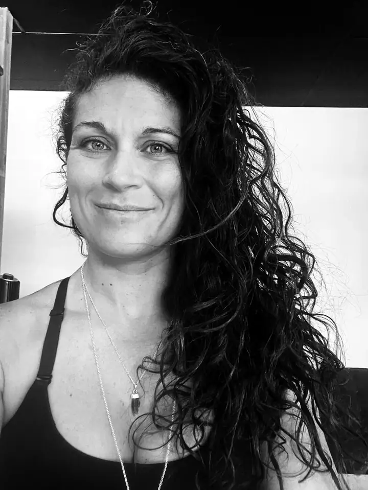

Le savoir BIM accessible à tous.

Je suis
Des demandes comme celles-ci
Créer une famille de poteaux porteursUne semelle en gradinUn fichier centralLa ligne de justification des mursUne famille paramétrique avec formules
Décris-moi ton problème.
Dis-moi ce que tu essaies de faire dans Revit. Je te réponds avec la suite.